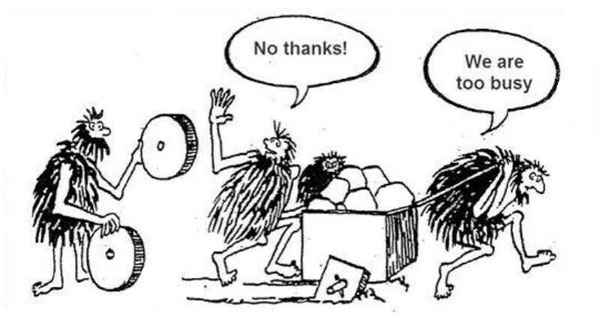

← Voltar para Aulas
### Faculdade Donaduzzi # Aula 06: Projeto - Pesquisa ### Benchmarking, Perfil e Personas <small>Prof. Guilherme de Araujo Gabriel - 1º Semestre</small>
<div style="text-align: left;"> ## Onde estamos no projeto? - Já definimos o problema e o impacto social (Imersão). - Já separamos os Requisitos de Usuário dos Funcionais. - Agora: Precisamos entender o mercado (o que já existe) e dar um rosto para quem vai usar o sistema. > "Desenvolver sem pesquisar o mercado é como tentar inventar a roda de olhos vendados." </div>
## A Síndrome da Tela em Branco - Muitos desenvolvedores travam tentando ser 100% originais o tempo todo. - Acreditam no mito da "inspiração divina", ignorando que grandes ideias nascem de referências.
## A Síndrome da Tela em Branco - A regra: liberte-se do peso de tentar criar algo do absoluto nada. <p></p> <small style="display: block; color: gray;">Reinvenção da roda. (Acessado em 22/03/2026)</small>
## "Roube (quero dizer, empreste) de outros" > "Bons artistas emprestam, ótimos artistas roubam." - Pablo Picasso - Estude incansavelmente as interfaces de sites e aplicativos já existentes no mercado. - O fato de um aplicativo similar já existir não é motivo para desistir, mas uma oportunidade para fazer melhor.
## O que é Benchmarking Prático? - Consiste em catalogar pontos fortes e fracos dos concorrentes. - Faça 3 perguntas básicas: - O que eles fazem bem que podemos "emprestar"? - O que os usuários detestam neles? - Como nosso aplicativo resolverá essa frustração?
## O que é Benchmarking Prático? <img src="./assets/2_benchmarking.avif" width="600" style="display: block; margin: 0 auto;"> <small style="display: block; color: gray;">Benchmarking Prático. (Acessado em 22/03/2026)</small>
## A sua "Gaveta de Ideias" - Não dependa apenas da memória. Crie um repositório visual. - Catalogue soluções interessantes (ex: uma tela de login bonita), mesmo que não vá usar hoje. - Ferramentas úteis: - Dribbble (focado em design de interfaces) - Pinterest (painéis de referências visuais)
## O perigo do "Usuário Genérico" - Projetar para "todos" geralmente resulta em projetar para "ninguém". - Sem uma definição clara de quem usará o sistema, o desenvolvedor acaba projetando para si mesmo (Design Autorreferencial). - Seu usuário não tem o seu conhecimento técnico!
## O que são Personas? - "Uma persona é uma personagem de ficção que consiste na personificação de seus usuários reais". - Elas humanizam os frios "Requisitos de Usuário". - Ajudam a equipe a manter o foco em para quem o aplicativo está sendo criado. > "Sempre que houver dúvida sobre incluir ou não um botão, a equipe deve perguntar: 'A nossa persona usaria isso?'"
## Os Elementos de uma Persona - Não basta dizer: "Homem, 30 anos". - Deve conter: - Nome fictício e Foto (para gerar empatia) - Profissão, Localização e Estado Civil - Nível de intimidade com a tecnologia - O mais importante: suas metas e frustrações reais
## Exemplo Prático: Persona - Idade: 29 anos, Web Designer. - Necessidade: Quer uma forma fácil de esboçar ideias no iPad e organizar os rabiscos em um só lugar. - Crença: Acha as ferramentas atuais (como Sketchbook Pro) complexas e intimidadoras. - Frustração: Acha que desenhar no tablet é artificial e prefere papel e caneta.
## Exemplo Prático: Persona <img src="./assets/3_personas.avif" width="600" style="display: block; margin: 0 auto;"> <small style="display: block; color: gray;">Exemplo Persona. (Acessado em 22/03/2026)</small>
## Do Personagem para o Filme - Se a Persona é o "ator", o Cenário é a "cena". - "Cenários são mini-histórias que refletem situações em que suas personas podem se encontrar". - Eles descrevem exatamente como, onde e por que a Persona abrirá o seu aplicativo no mundo real.
## Testando Limites com Cenários - O cenário obriga você a pensar nas distrações do mundo real. - Exemplo: Susan está no parque com seus filhos. Ela quer encontrar uma receita rápida de lasanha para o jantar. - Desafio: Como o app pode ajudá-la se ela tem apenas uma mão livre e está prestando atenção nas crianças? > "Quais recursos seriam inúteis para a Susan nesse cenário caótico, mas que pareceriam ótimos no silêncio do seu escritório?"
## Perguntas que o Cenário Responde - O aplicativo exige muita digitação em um momento onde o usuário está em movimento? - A interface possui botões grandes o suficiente para um uso rápido? - A linguagem do app transmite calma ou aumenta o estresse da Persona?
## Storyboard <img src="./assets/4_storyboard.avif" width="700" style="display: block; margin: 0 auto;"> <small style="display: block; color: gray;">Exemplo Storyboard. (Acessado em 22/03/2026)</small>
## TDE - Pesquisa e Perfis - Missão (Benchmarking): Escolha 2 aplicativos/sistemas concorrentes da ideia do seu grupo. Faça prints, liste 2 pontos fortes (para "emprestar") e 2 pontos fracos (para evitar). - Missão (Personas): Crie 2 Personas detalhadas para o projeto. Foque especificamente nas frustrações que elas têm com as soluções atuais. - Missão (Cenários): Escreva 2 Cenários de Uso (mini-histórias) conectando as Personas ao aplicativo do grupo. - Entrega: PDF estruturado.
## Próximos Passos - Hoje, humanizamos o problema. - No próximo encontro, transformaremos essas Personas e Cenários em telas reais. - Preparação: Comecem a explorar a ferramenta Figma para a fase de Ideação.
## Referências <div style="font-size: 0.5em; text-align: left;"> ### Imagens e Mídias * **[1] Exemplo de reinvenção da roda:** [Square or Round Wheels?](https://steenschledermann.wordpress.com/2014/05/17/square-or-round-wheels/). Acesso em: 22 Mar. 2026. * **[2] Exemplo de benchmarking prático:** [Benchmarking](https://maze.co/collections/ux-ui-design/benchmarking/). Acesso em: 22 Mar. 2026. * **[3] Exemplo de Personas:** [How to create a user persona template + examples](https://maze.co/guides/user-personas/user-persona-template/). Acesso em: 22 Mar. 2026. * **[4] Exemplo de Storyboard:** [UX Storyboards: Ultimate Guide](https://ixdf.org/literature/article/ux-storyboards). Acesso em: 22 Mar. 2026. </div>
## Referências <div style="font-size: 0.5em; text-align: left;"> ### Bibliografia Consultada * **LOWDERMILK, Travis.** *Design centrado no usuário: um guia para o desenvolvimento de aplicativos amigáveis.* São Paulo: Novatec Editora Ltda, 2013. 182 p. * **ROGERS, Yvonne.** *Design de interação: além da interação humano-computador.* 3. ed. Porto Alegre: Bookman, 2013. 585 p. * **SOMMERVILLE, Ian.** *Engenharia de software.* 10. ed. São Paulo: Pearson Education do Brasil, 2018. 756 p. </div>